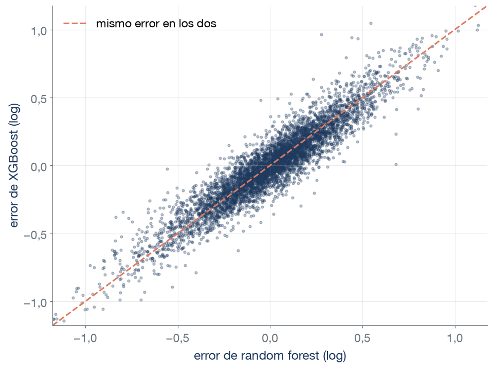
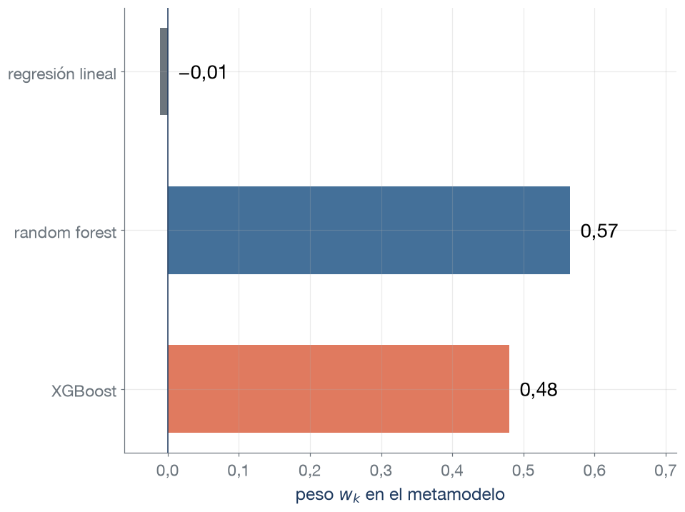
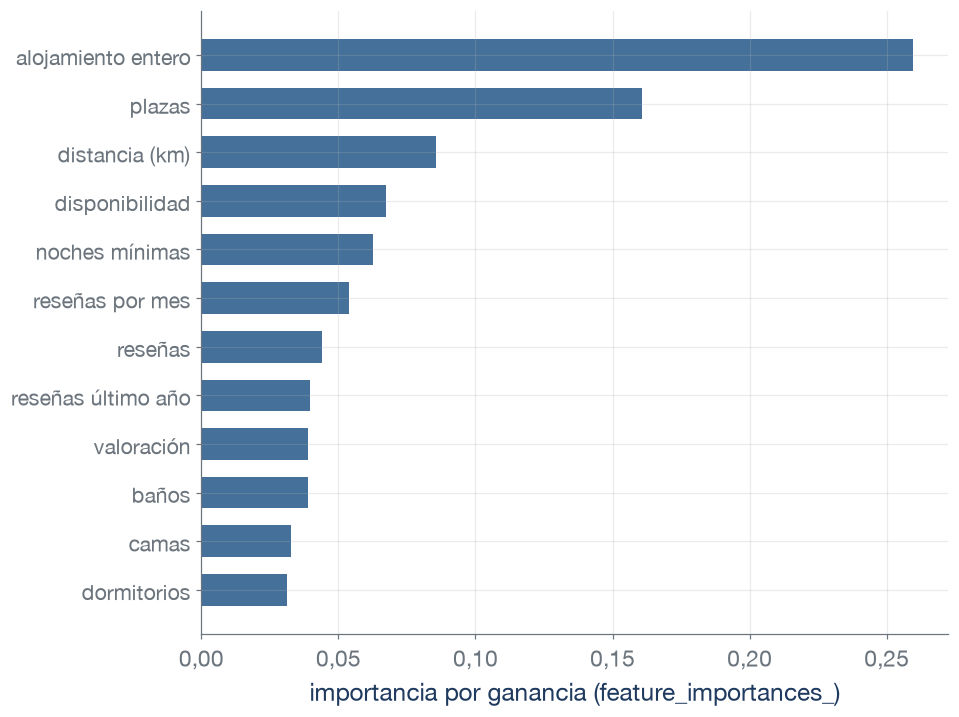
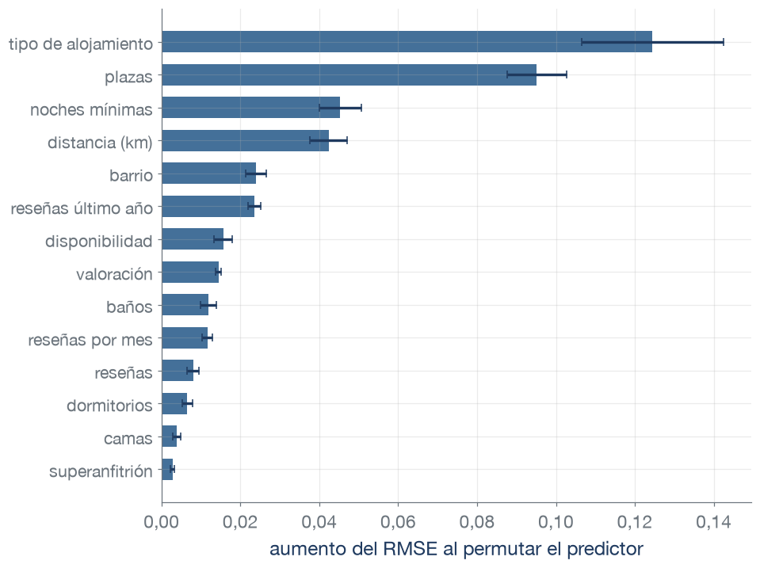
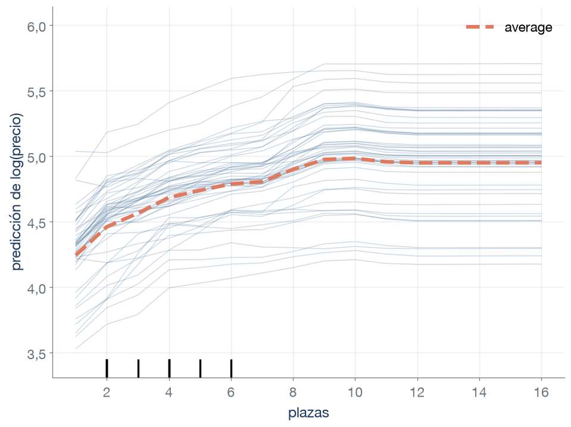
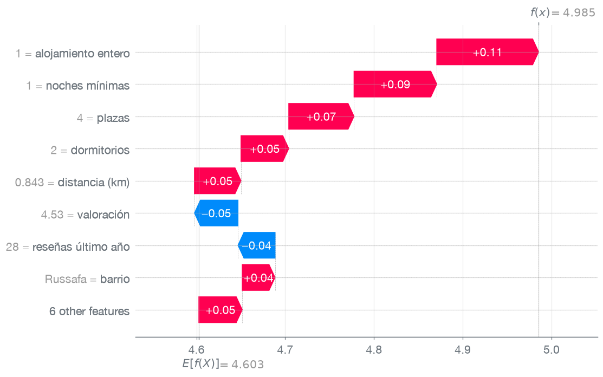
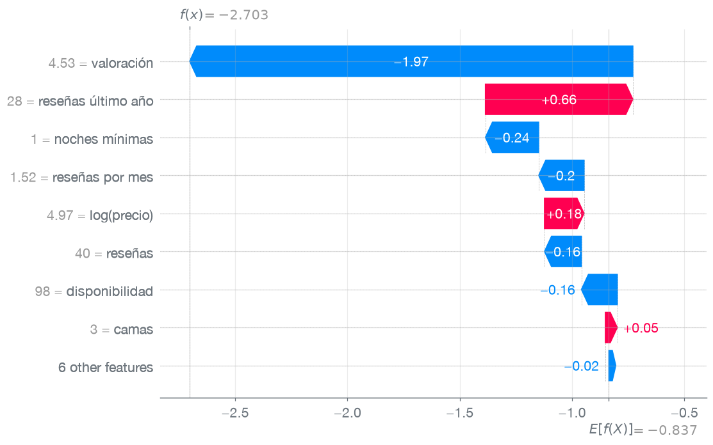
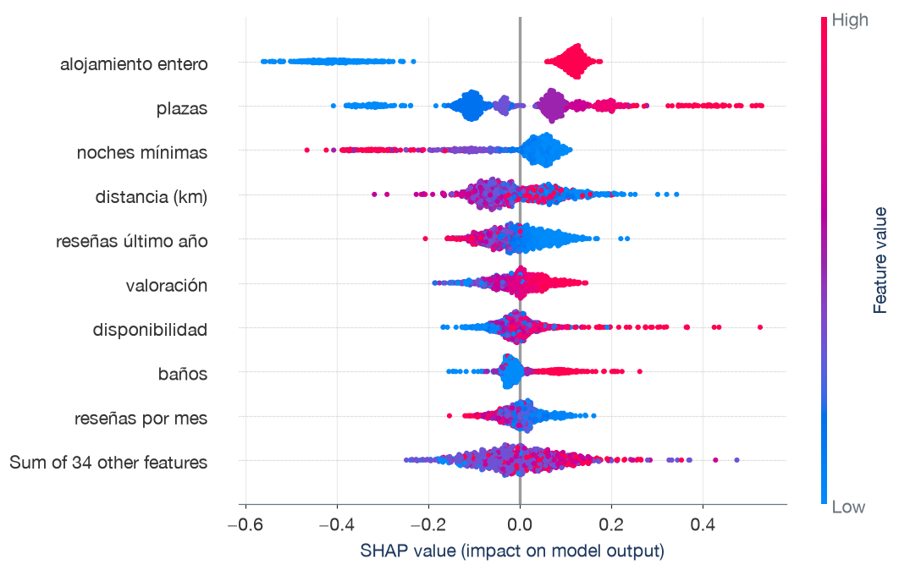
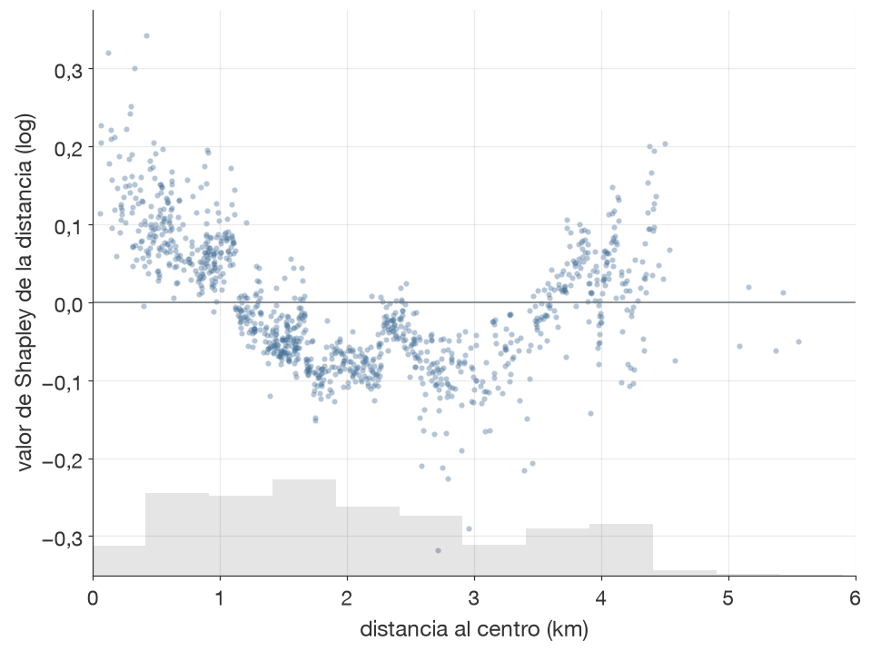
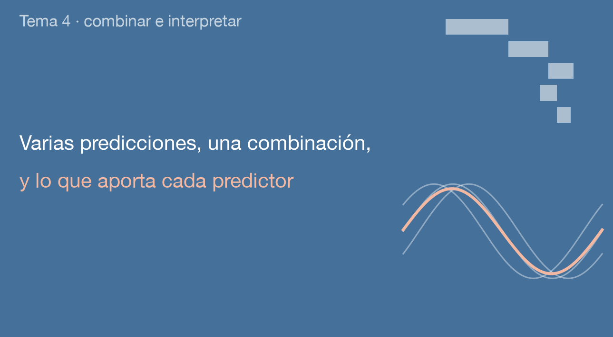

Técnicas Avanzadas de Predicción en Negocios
Piso entero de 4 plazas en Ruzafa, anunciado a 144 € por noche. Cada modelo se ajusta con las otras cuatro particiones del conjunto de entrenamiento:
| Modelo | Precio predicho para el piso | RMSE de validación cruzada |
|---|---|---|
| Regresión lineal | 124 € | 0,368 |
| Random forest | 138 € | 0,314 |
| XGBoost | 146 € | 0,314 |
Fuente: Inside Airbnb, Valencia (listados.csv). Misma población y división que los temas 2 y 3, con 5324 anuncios de entrenamiento. RMSE de log(precio), media de las 5 particiones. Precios: exponencial de la predicción en log(precio).
Dos tareas con los modelos ya vistos: combinar sus predicciones y explicar de dónde salen.
| Combinación | Qué cambia de un modelo a otro |
|---|---|
| Bagging | Los datos: cada árbol se ajusta con un remuestreo del conjunto de entrenamiento |
| Random forest | Los datos (un remuestreo) y algo del modelo: cada corte elige entre unos pocos predictores al azar (max_features) |
| Boosting | La respuesta: cada árbol se ajusta a los residuos de los árboles anteriores |
| Voting y stacking | El tipo de modelo: se combinan modelos distintos (por ejemplo, regresión lineal, random forest y XGBoost) ajustados con el mismo conjunto de entrenamiento |
Modelos de distinto tipo aprenden formas distintas de la relación y pueden equivocarse en observaciones distintas. Esa diferencia es la que aprovecha la combinación.

Correlación de los errores (predicción − log(precio) observado):
| Par de modelos | Correlación |
|---|---|
| Random forest y XGBoost | 0,94 |
| Lineal y random forest | 0,86 |
| Lineal y XGBoost | 0,81 |
Promediar puede mejorar la predicción cuando los modelos tienen errores de magnitud parecida que se compensan en parte.
Cada punto es un anuncio del conjunto de entrenamiento, con predicciones de validación cruzada (cada anuncio, predicho por el modelo que no lo vio al estimarse).
Media de las predicciones de log(precio) de los modelos, con validación cruzada en el entrenamiento:
| Modelo | RMSE | MAE | R² |
|---|---|---|---|
| Modelo nulo (media) | 0,533 | 0,419 | 0,00 |
| Regresión lineal | 0,368 | 0,276 | 0,52 |
| Random forest | 0,314 | 0,233 | 0,65 |
| XGBoost | 0,314 | 0,233 | 0,65 |
| Media de los tres | 0,317 | 0,238 | 0,64 |
RMSE de validación cruzada de log(precio): errores relativos, con más peso a los grandes. Los hiperparámetros de random forest y XGBoost se eligieron por validación cruzada con las mismas particiones.
Los errores de la regresión lineal son los menos correlacionados con los de los otros dos modelos. ¿Qué medias de dos modelos tendrán menos RMSE que el random forest?
| Media de | RMSE de los dos modelos | Correlación de los errores |
|---|---|---|
| RF y XGBoost | 0,314 y 0,314 | 0,94 |
| Lineal y RF | 0,368 y 0,314 | 0,86 |
| Lineal y XGBoost | 0,368 y 0,314 | 0,81 |
| Media de | RMSE de los dos modelos | Correlación | RMSE de la media |
|---|---|---|---|
| RF y XGBoost | 0,314 y 0,314 | 0,94 | 0,309 |
| Lineal y RF | 0,368 y 0,314 | 0,86 | 0,329 |
| Lineal y XGBoost | 0,368 y 0,314 | 0,81 | 0,325 |
Solo la media de random forest y XGBoost baja de 0,314: el error de la regresión lineal (0,368) pesa más que lo que compensa su menor correlación.
Un modelo base reproduce sin error las observaciones con las que se ajustó (R² = 1). Si el metamodelo se ajustara con sus predicciones sobre esas mismas observaciones, ¿qué peso le daría?
Validación cruzada interna (cv de StackingRegressor): crea las predicciones con las que aprende el metamodelo. Validación cruzada exterior (la de la tabla anterior): evalúa el conjunto.

Metamodelo: regresión lineal ajustada con las predicciones de validación cruzada de los tres modelos, en todo el conjunto de entrenamiento (un ajuste final, distinto de los cinco evaluados).
Superanfitrión (30,5 % de los anuncios). Se prioriza la log-loss porque se combinan probabilidades:
| Modelo | Log-loss | AUC | Exactitud |
|---|---|---|---|
| Clasificador nulo | 0,615 | 0,500 | 0,695 |
| Logit | 0,490 | 0,805 | 0,774 |
| Random forest | 0,391 | 0,881 | 0,834 |
| XGBoost | 0,403 | 0,870 | 0,820 |
| Voting: voto por mayoría | — | — | 0,827 |
| Voting: media de probabilidades | 0,406 | 0,871 | 0,825 |
| Stacking (metamodelo logit) | 0,388 | 0,881 | 0,827 |
(—: con voting="hard", el voting da solo la clase predicha.)
voting="hard" (voto por mayoría) elige la clase que predicen más modelos. Con voting="soft" (media de probabilidades) promedia \(\hat p\) y aplica el umbral 0,5.
VotingRegressor, VotingClassifier, StackingRegressor y StackingClassifier (sklearn.ensemble):
| Hiperparámetro | Qué controla | Efecto |
|---|---|---|
estimators |
Lista de modelos base, con un nombre para cada uno | Cada modelo base es un Pipeline completo |
weights (voting) |
Pesos fijos de cada modelo en la media | Un peso mayor acerca la media a ese modelo |
voting (VotingClassifier) |
"hard" (voto por mayoría) o "soft" (media de probabilidades) |
Solo "soft" da probabilidades |
final_estimator (stacking) |
El metamodelo | Un modelo lineal deja leer los pesos |
cv (stacking) |
Particiones de las predicciones de validación cruzada | Más particiones, predicciones base de ajustes con más datos y más lento |
passthrough (stacking) |
Si el metamodelo recibe también los predictores originales | Con True, el metamodelo también usa los predictores originales |
stack_method (StackingClassifier) |
Qué salida de cada clasificador recibe el metamodelo | Con "auto", la primera que exista de predict_proba, decision_function y predict |
Valores por defecto: weights=None (pesos iguales), voting=“hard”, final_estimator=RidgeCV (regresión) o LogisticRegression (clasificación), cv=5, passthrough=False, stack_method=“auto”.

XGBoost ajustado con cuatro de las cinco particiones del entrenamiento. Las doce columnas con más ganancia.
En scikit-learn es el atributo feature_importances_ del modelo ajustado. Lo tienen DecisionTree, RandomForest, ExtraTrees, GradientBoosting y AdaBoost (regresión y clasificación), XGBoost y LightGBM. HistGradientBoosting no lo tiene.

XGBoost, 10 permutaciones por predictor en cada una de las 5 particiones de validación. La barra es la media de las 5 particiones y la línea muestra su dispersión entre particiones (± 2 errores típicos).
| Correlación | Plazas | Dormitorios | Camas |
|---|---|---|---|
| Plazas | 1 | 0,66 | 0,77 |
| Dormitorios | 1 | 0,70 |
Se permutan las plazas en dos modelos: el que tiene dormitorios y camas, y otro reentrenado sin ellos. ¿En cuál sube más el RMSE?

Predicciones de XGBoost para los anuncios de una partición de validación, que el modelo no usó al ajustarse (curvas ICE de 50 elegidos al azar).
sklearn.inspection
| Herramienta y argumento | Qué controla | Efecto |
|---|---|---|
permutation_importance(modelo, X, y) |
Importancia por permutación de cada columna de X |
Con un Pipeline, mide los predictores originales |
n_repeats |
Permutaciones por predictor | Más repeticiones, media más estable |
scoring |
Métrica cuyo empeoramiento se mide | La métrica del problema (neg_root_mean_squared_error) |
PartialDependenceDisplay.from_estimator |
Gráfico de dependencia parcial y curvas ICE | Uno o dos predictores por panel |
kind |
"average" (dependencia parcial), "individual" (ICE) o "both" |
Las ICE muestran si el efecto cambia entre observaciones |
grid_resolution, subsample |
Valores del predictor y número de curvas ICE | Más valores, curva más fina y más lenta |
Valores por defecto: n_repeats=5, scoring=None (la métrica del estimador), kind=“average”, grid_resolution=100, subsample=1000.
Propiedades
Eficiencia: los \(\phi_j\) suman exactamente la diferencia entre la predicción de la observación y el valor base. Un predictor que no cambia ninguna predicción tiene \(\phi_j = 0\).
En modelos de árboles, shap.TreeExplainer calcula los \(\phi_j\) exactos en segundos.
Predictores ausentes
En un árbol, el cálculo es directo y rápido. En un corte por un predictor de \(S\), la observación sigue su rama. En un corte por un predictor ausente, sigue las dos, y cada rama pesa la proporción de observaciones de ajuste que pasó por ella. \(\hat f(S)\) es la media ponderada de las hojas a las que llega, sumada sobre los árboles.
En otros modelos se usa un conjunto de referencia. Los predictores ausentes toman los valores de cada observación de referencia, y \(\hat f(S)\) es la media de esas predicciones.



1065 anuncios de la partición de validación del piso de Ruzafa. Las nueve columnas con más \(|\phi_j|\) medio. La última fila suma el resto.

Entre 3,5 y 4,5 km del centro, el valor de Shapley de la distancia vuelve a ser positivo. ¿Quiere decir que alejarse del centro sube el precio?
Anuncios de la partición de validación del piso de Ruzafa. 17 de los 1065, a más de 6 km, quedan fuera del eje.
shap: explicadores y gráficos
| Función | Qué calcula o dibuja | Uso |
|---|---|---|
shap.TreeExplainer(modelo) |
\(\phi_j\) exactos de modelos de árboles (scikit-learn, XGBoost, LightGBM) | Sin data, ausentes por las rutas de los árboles. Con data, por un conjunto de referencia |
shap.LinearExplainer(modelo, X_ref) |
\(\phi_j\) de un modelo lineal, con fórmula cerrada | Conjunto de referencia: X_ref |
shap.Explainer(f, X_ref) |
\(\phi_j\) de cualquier modelo, con f igual a modelo.predict o modelo.predict_proba |
Exacto hasta 10 predictores, por muestreo de órdenes con más. X_ref numérico: con un Pipeline, el modelo final y los datos preprocesados |
shap.sample(X, 100) |
Submuestra de X para usarla como X_ref |
El tiempo crece con el tamaño de X_ref |
sv = explicador(X) |
Objeto Explanation con .values (\(\phi_j\)), .base_values (\(\phi_0\)) y .data |
Entrada de los gráficos |
shap.plots.waterfall(sv[i]) |
Explicación de la observación i, desde \(\phi_0\) hasta su predicción |
Una observación |
shap.plots.beeswarm(sv) |
Un punto por observación y predictor, con el color del valor del predictor | Todas las observaciones |
shap.plots.scatter(sv[:, "col"]) |
\(\phi_j\) de un predictor frente a su valor | Forma del efecto en el modelo |
shap.plots.bar(sv) |
Media de \(\lvert\phi_j\rvert\) por predictor | Importancia global |
Valores por defecto: feature_perturbation=“auto” (rutas sin data, referencia con data), max_display=10, nsamples=100.
Se quiere un modelo que proponga un precio a cada anuncio y explique de dónde sale. En parejas (3 min): ¿qué modelo y qué explicación se propondrían?
| Modelo | RMSE | MAE | R² | Diferencia con RF | Particiones mejor que RF |
|---|---|---|---|---|---|
| Regresión lineal | 0,368 | 0,276 | 0,52 | 0,0544 | 0 de 5 |
| Random forest | 0,314 | 0,233 | 0,65 | — | — |
| XGBoost | 0,314 | 0,233 | 0,65 | 0,0002 | 1 de 5 |
| Media de los tres | 0,317 | 0,238 | 0,64 | 0,0034 | 0 de 5 |
| Media de RF y XGBoost | 0,309 | 0,229 | 0,66 | −0,0046 | 5 de 5 |
| Stacking (metamodelo lineal) | 0,309 | 0,229 | 0,66 | −0,0047 | 5 de 5 |
RMSE de validación cruzada de log(precio): errores relativos, con más peso a los grandes. Los hiperparámetros de random forest y XGBoost se eligieron por validación cruzada con las mismas particiones.
Predictores con más importancia por permutación en XGBoost: tipo de alojamiento (0,124), plazas (0,095), noches mínimas (0,045).
| Concepto | Significado | scikit-learn |
|---|---|---|
| Voting (regresión) | Predicción combinada igual a la media, con pesos iguales o fijados a mano, de las predicciones de varios modelos | VotingRegressor |
| Voto por mayoría | Clase que predicen más modelos | VotingClassifier(voting="hard") |
| Media de probabilidades | Media de las probabilidades de varios clasificadores, con el umbral después | VotingClassifier(voting="soft") |
| Stacking | Combinación con un metamodelo ajustado sobre las predicciones de validación cruzada de los modelos base | StackingRegressor, StackingClassifier |
| Metamodelo | Modelo cuyos predictores son las predicciones de los modelos base | final_estimator |
| Predicciones de validación cruzada | Predicción de cada observación con un ajuste que no la usó | cross_val_predict, cv |
| Concepto | Significado | scikit-learn / shap |
|---|---|---|
| Importancia por ganancia | Ganancia de los cortes de cada columna, sumada y como proporción del total, con los datos del ajuste | feature_importances_ (importance_type="total_gain") |
| Importancia por permutación | Aumento del error de validación al permutar al azar los valores de un predictor | permutation_importance |
| Curva ICE | Predicción de una observación al cambiar un predictor, con los demás fijos | kind="individual" |
| Dependencia parcial | Media de las curvas ICE de todas las observaciones | PartialDependenceDisplay |
| Valor base \(\phi_0\) | Predicción con todos los predictores ausentes (en este ajuste, aproximadamente la media de las predicciones del modelo sobre sus datos de ajuste) | base_values |
| Valor de Shapley \(\phi_j\) | Contribución del predictor \(j\) a una predicción: media de lo que la cambia al añadirlo, sobre todos los órdenes, con los predictores ausentes representados según el explicador | shap.TreeExplainer |
| Eficiencia | Los valores de Shapley de una observación suman su predicción menos el valor base | — |
